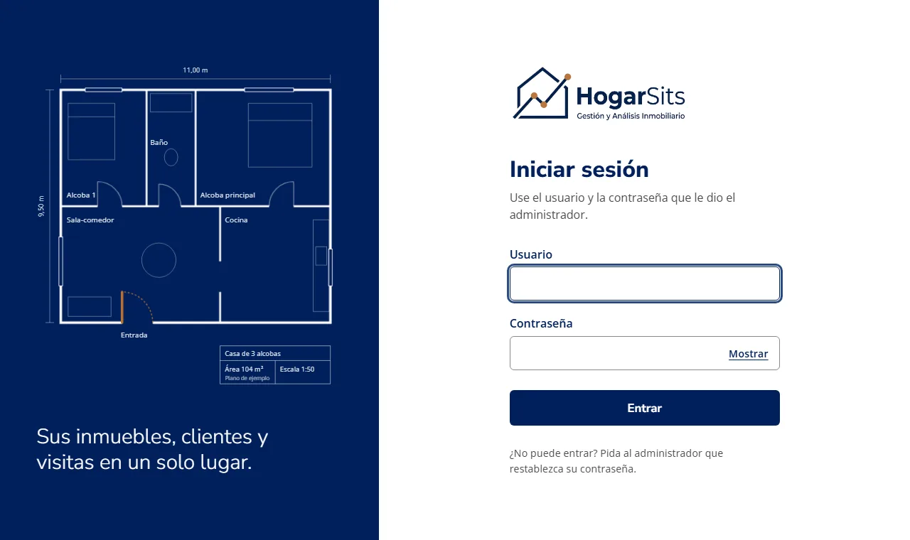
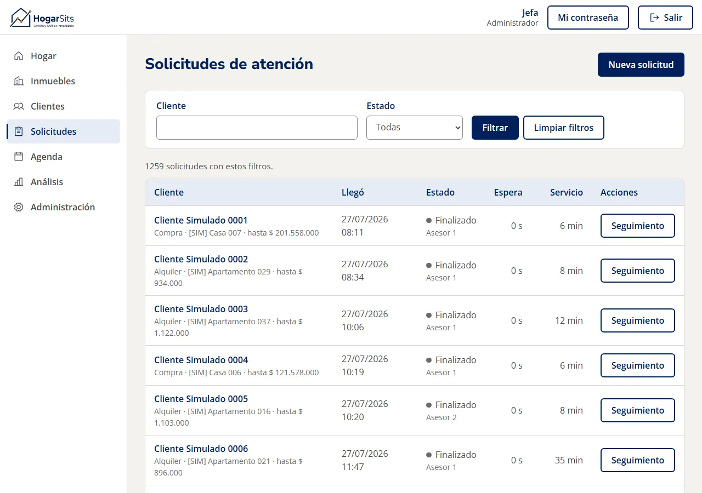
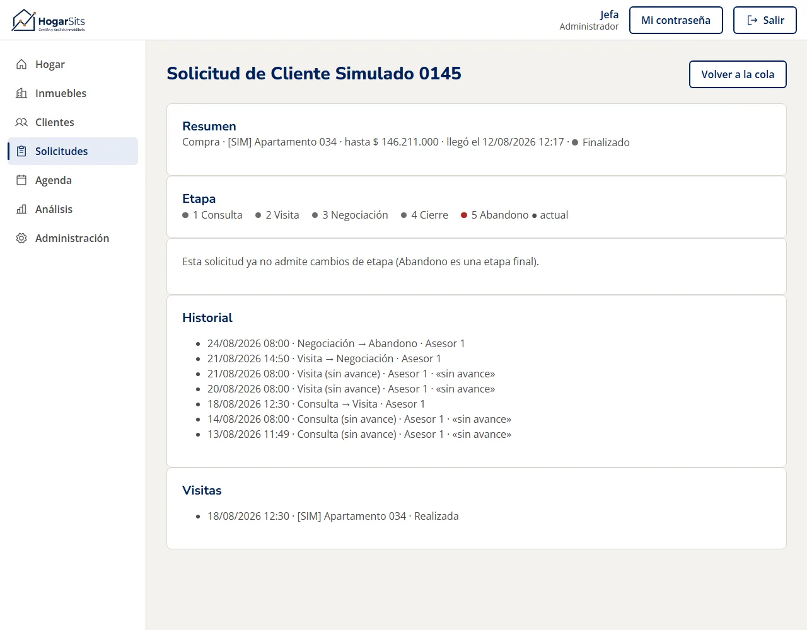
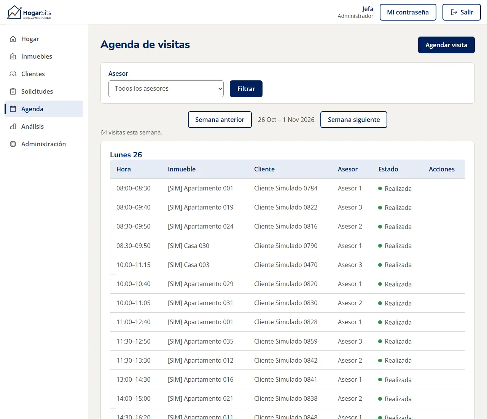
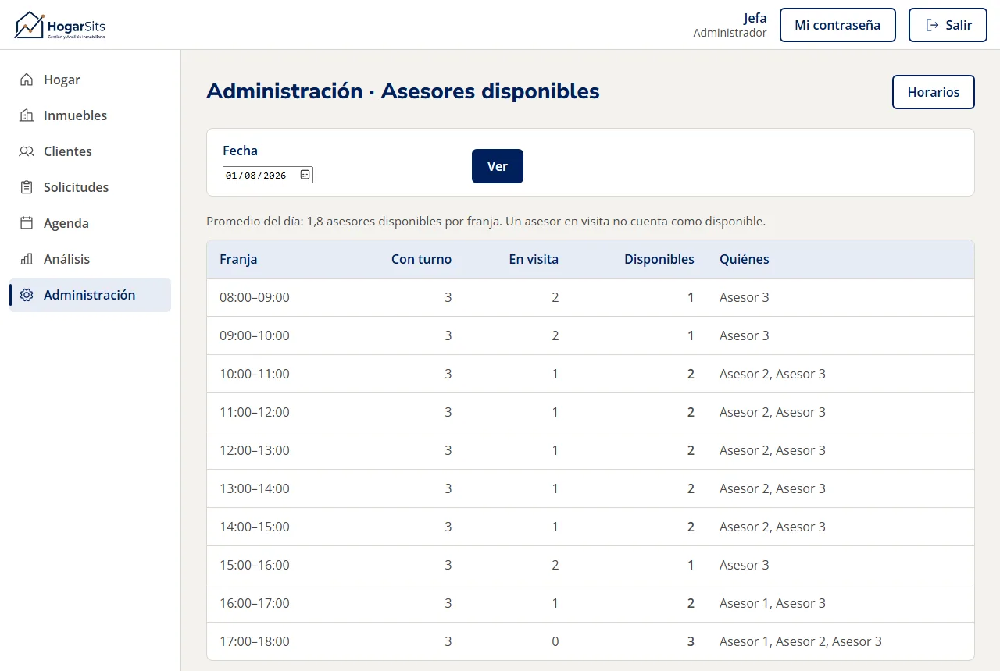
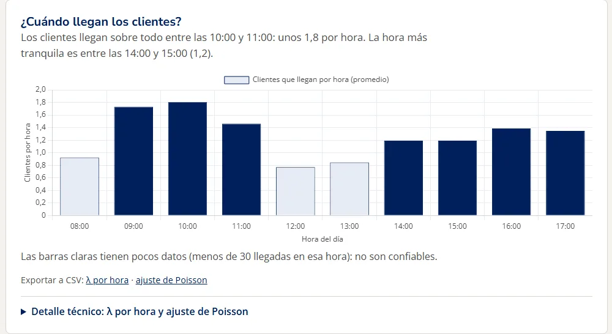
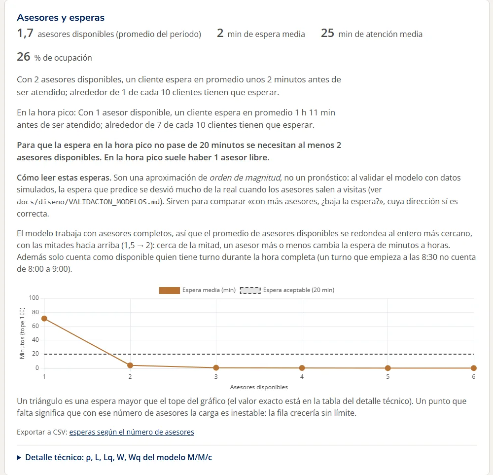
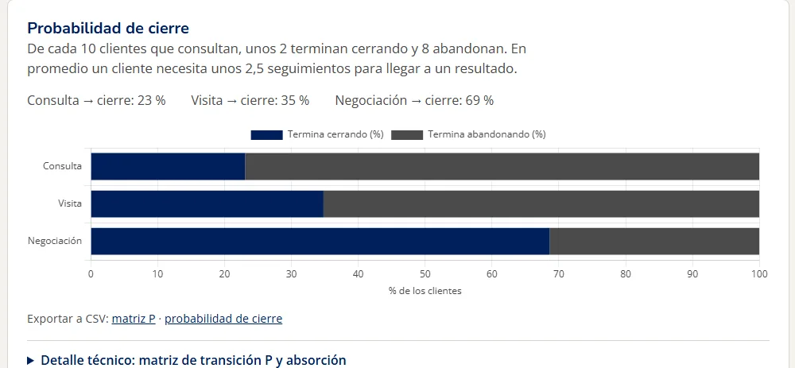
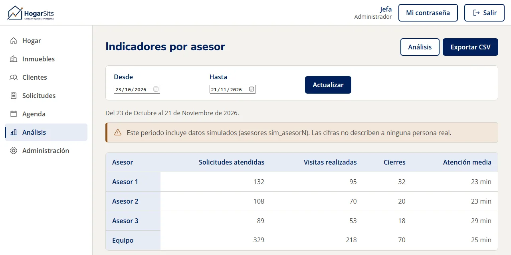

Procesos Estocásticos · Universidad de Córdoba · 2026
HogarSits
Gestión y análisis inmobiliario
Un sistema web para que una inmobiliaria organice sus inmuebles, clientes y visitas, y entienda cuándo llegan los clientes, cuántos asesores necesita y cuántos terminan cerrando.
- William Moya SantanaLíder de proyecto
- Natalia DurangoAnalista de requerimientos
- Camilo DiazDesarrollo y base de datos
- Elizabeth CamañoAnalista estocástico
Puede navegar con las flechas ← → del teclado.
El problema
Entrevistamos a 3 inmobiliarias de Montería (muestra por conveniencia: son conteos, no porcentajes representativos). Las tres trabajan con Excel y WhatsApp.
3 de 3han perdido una solicitud por falta de seguimiento
2 de 3han ofrecido un inmueble que ya estaba vendido o arrendado
2 de 3han tenido dos visitas cruzadas
2 de 3han tenido clientes esperando por falta de asesores
Fuente: primera ronda de encuestas (n = 3). Las tres quieren probar un prototipo. La segunda ronda de entrevistas aún no se ha hecho (ver «Límites»).
Qué hace: dos pilares
1 · Gestión
- Inmuebles con estados, filtros, historial y fotos.
- Clientes sin duplicados; solicitudes con hora de llegada automática.
- Agenda sin cruces: lo impide la propia base de datos, no solo la pantalla.
- Etapas del cliente con historial; «a quién contactar hoy».
2 · Análisis estocástico
- Poisson: cuándo llegan los clientes, por hora.
- Colas M/M/c: cuántos asesores hacen falta.
- Markov: qué porcentaje cierra y en cuántos pasos.
- Cada cifra con una frase que un gerente entienda.
Todas las capturas de este sitio usan datos simulados (clientes «Simulado 0145», inmuebles «[SIM]»). No son de ninguna inmobiliaria real.






El análisis, en lenguaje de negocio
La encuesta mostró que la analítica fue lo menos valorado. Por eso cada resultado va con una frase, y la parte técnica queda plegada.




La matemática, comprobada
Los tres modelos son funciones puras y se verifican contra los ejemplos de la Propuesta y contra un segundo método de cálculo.
| Modelo | Ejemplo de referencia | Resultado | Segunda comprobación |
|---|---|---|---|
| Cola M/M/1 | λ = 2, μ = 3 | ρ = 0,667 · L = 2 · W = 1 h · Lq = 1,333 · Wq = 0,667 h | Cadena de nacimiento y muerte |
| Cola M/M/c | λ = 20 clientes en 12 h, μ = 1 por 45 min | 2 asesores: 28,8 min de espera · 3 asesores: 4,0 min | Cadena de nacimiento y muerte resuelta aparte |
| Cadena de Markov | Matriz P del README | P(cierre desde Consulta) = 22,748 % · 2,3989 pasos | Potencias de la matriz P |
| Poisson | Datos simulados de 120 días, λ = 12 clientes/día | λ estimada 11,99 (error medio 1,7 %); χ² rechaza 3,8 a 5,5 % con datos que sí son Poisson | Comparación con los parámetros que el simulador conoce |
Detalle curioso: la Propuesta dice «≈ 22,8 %». El valor exacto es 22,748 %: sale de redondear dos veces (22,748 → 22,75 → 22,8). Las pruebas afirman el valor exacto.
¿Recuperan los parámetros verdaderos? (validación con simulación)
1 a 2 %error de λ, μ y pasos esperados (120 días)
2,6 a 6,5 %error de la probabilidad de cierre
10 % → 2 %error de P(cierre) con 30 → 300 días de datos
≈ 5 %rechazos del χ² con datos que sí son de Poisson (bien calibrado)
El hallazgo incómodo: los parámetros se estiman bien, pero la espera que predice M/M/c no coincide con la simulada (simulada 9,7 min; el modelo da 0,15, 1,6 o 12,3 según cómo se defina el número de asesores). Acierta la dirección (más asesores, menos espera), no la magnitud, porque las visitas sacan a los asesores de la oficina. El panel lo avisa en pantalla.
Calidad y construcción
> 700pruebas automáticas contra PostgreSQL real
31 de 31criterios de aceptación de 13 historias, con prueba
98,2 %cobertura de código (3 052 sentencias)
532 msla pantalla más lenta con 10 262 solicitudes (límite: 3 s)
Cómo se trabajó
- Seis sprints con tablero, una rama y un PR por historia, y CI obligatorio para entrar a
main. - Decisiones documentadas (ADR) y un informe de pruebas con lo que no se probó.
- Las pruebas encontraron errores reales (cierres contados dos veces, un horario por defecto confundido con «sin horario», un build que fallaba por un archivo de terceros) y todos quedaron corregidos y documentados.
- Una revisión independiente de la matemática encontró reservas que se corrigieron.
Tecnología
- Django 6 y PostgreSQL 17; reglas de integridad en la base de datos.
- Matemática en Python puro (NumPy, SciPy); gráficos con Chart.js.
- Imagen Docker de producción (gunicorn, usuario sin privilegios): 145 MB comprimida, probada con la base de datos caída y recuperada.
- Fotos en S3 con enlaces firmados (código listo y probado en local).
Lo que no hicimos, dicho con claridad
Presentamos un prototipo académico. Esto es lo que no está demostrado:
- Datos reales. Todo el análisis se probó con datos simulados. Con 3 inmobiliarias entrevistadas no se puede generalizar; la segunda ronda de entrevistas está preparada pero no se ha realizado.
- Las esperas del modelo M/M/c son de orden de magnitud (ver la validación).
- El historial de etapas aún no es inmutable (regla RN-33): se puede editar y borrar. Hay pruebas que lo declaran y una solución recomendada.
- El estado de un inmueble se valida en el formulario pero la base de datos no lo impone.
- AWS. La imagen de producción se construye y se prueba, pero la subida a ECR, el despliegue y las fotos en un bucket real de S3 no se han verificado contra una cuenta de AWS.
- Usabilidad con personas y concurrencia real: pendientes del piloto.
Cada uno de estos puntos está documentado en el informe de pruebas del repositorio, con su estado.
Siguientes pasos
- Aplicar la segunda ronda de entrevistas (guion y plantilla listos) y reemplazar los supuestos por datos reales.
- Hacer inmutable el historial de etapas (RN-33) con una restricción en PostgreSQL.
- Piloto con una inmobiliaria: usabilidad y calibración de los modelos.
- Despliegue en AWS con integración continua sin claves guardadas.
github.com/Williamtrix2022/HogarSits
Código, documentación, decisiones, informe de pruebas y validación de los modelos están en el repositorio.